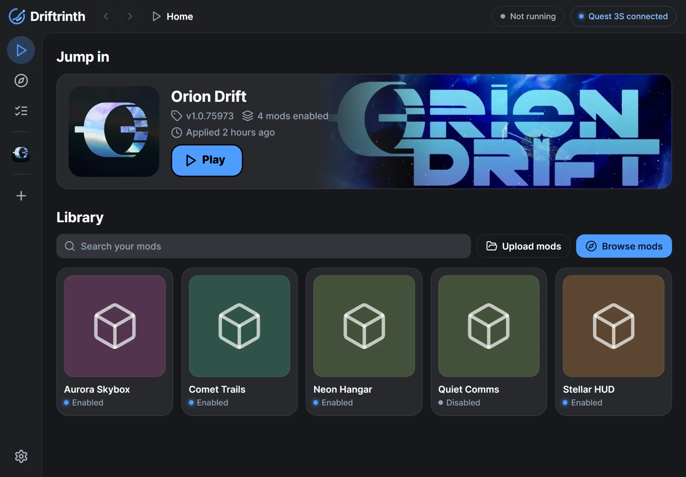

Built-in store and uploads
Browse and install mods from the built-in store, or upload your own zip, 7z or rar mod files.
Driftrinth is a free mod manager that runs on the headset itself, so you can browse, install and toggle mods with no PC needed after install.
Download Driftrinth
Features
Browse and install mods from the built-in store, or upload your own zip, 7z or rar mod files.
Switch mods on and off and see conflicts before you apply anything.
Apply mods to the game, then add more later while keeping the ones you already applied.
Remove all mods from the game later, using the saved copy of the game file.
A Setup flow walks you through pairing and saving the game file step by step.
Pair over wireless ADB one time, and Driftrinth reconnects automatically after that.
Start Orion Drift straight from the app when you're done.
Light, Dark and OLED modes, 8 colour themes, and an animated RGB theme with a speed slider.
Point the app at any store address. The default is https://driftshop.stripes.lol/.
Install
In the Meta Horizon phone app, turn on Developer Mode for your headset.
Download Driftrinth.apk and sideload it onto the headset.
Find Driftrinth under Unknown Sources in the app library and open it.
The Setup screen covers pairing with Wireless debugging and saving the game file. You'll need about 3 GB of free space.
FAQ
No. You may need a computer or phone to sideload the APK the first time, but after that Driftrinth runs entirely on the headset.
During Setup, Driftrinth pairs with the headset over Wireless debugging and saves a copy of the game file. When you apply, it writes your enabled mods into the game. You can add more mods later and keep the ones already applied.
Use the option to remove all mods. Driftrinth restores the game using the copy of the game file it saved during Setup.
Yes. You can set a custom store address in the app. The default is https://driftshop.stripes.lol/.
Possibly. Modifying game files may break the game's terms of service and can put your account at risk. Driftrinth can't guarantee otherwise. If you use mods, you do so at your own risk.